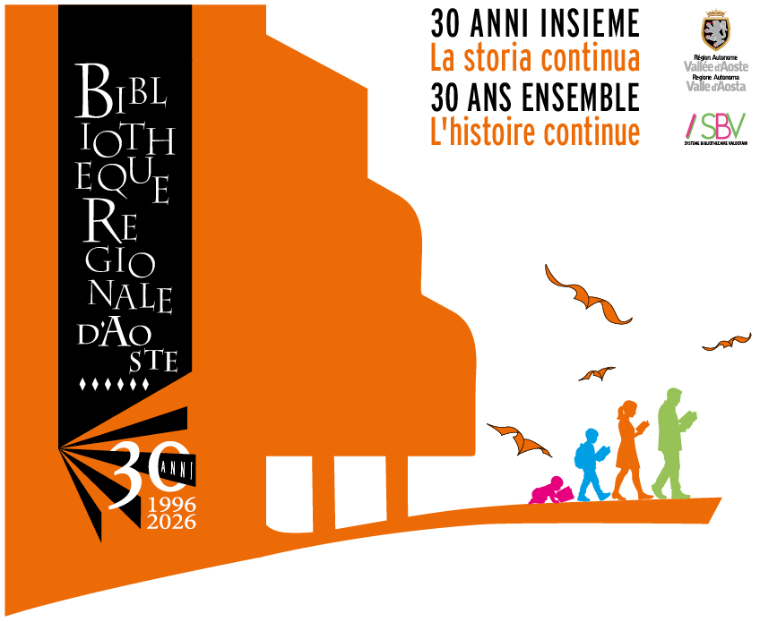

https://fonts.gstatic.com

Suoni della Memoria
Seleziona una traccia per l'ascolto
01
Scanner Beep
02
Vinyl Crackles
03
Caricatore Diapositive
04
Dial-Up Modem
Nessuna traccia selezionata
Il browser non supporta l'audio.